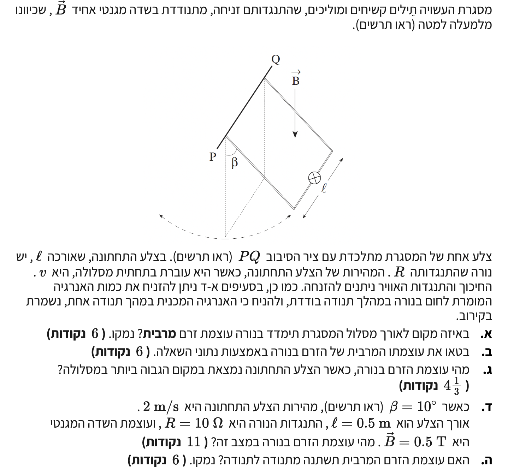

פתרון מוסבר - חשמל 2003, שאלה 5
בגרות פיזיקה 5 יח"ל
בשאלה זו אנו עוסקים במסגרת מוליכה הנעה בשדה מגנטי אחיד. השאלה משלבת עקרונות של קינמטיקה של תנועה מעגלית, שימור אנרגיה (בקירוב), וכא"מ מושרה (חוק פאראדיי).
עודכן:
--- --:--:--

[תמונת השאלה המקורית]
לא נמצאה תמונה בשם question-image.png באותה תיקייה.
מה נתון: מסגרת מלבנית קשיחה מתנדנדת בשדה מגנטי אחיד \(B\) שכיוונו מטה. נתון מפורש חשוב: בסעיפים א'-ד' ניתן להזניח את המרת האנרגיה לחום בנורה במהלך תנודה בודדת, ולהניח כי האנרגיה המכנית נשמרת בקירוב.
מה מחפשים: אנו מתבקשים למצוא באיזו נקודה לאורך קשת התנועה של המסגרת, הזרם החשמלי \( I \) הזורם בנורה מגיע לערכו המקסימלי.
נוסחאות ועקרונות בשימוש:
\( \varepsilon = B_{\perp}\ell_{\perp}v \)
\( V = IR \)
עקרון שימור אנרגיה מכנית (לפי הנחת השאלה)
פתרון צעד-אחר-צעד:
כאשר המסגרת מתנדנדת, הצלע התחתונה "חותכת" את קווי השדה המגנטי. נגדיר את \( \theta \) כזווית שיוצרת המסגרת עם האנך (בנקודה הנמוכה ביותר \( \theta = 0 \)). וקטור המהירות של הצלע התחתונה משיק למסלול המעגלי, ולכן הוא יוצר זווית \( \theta \) עם האופק.
השדה המגנטי מופנה אנכית כלפי מטה. לכן, רק הרכיב האופקי של המהירות תורם לחיתוך קווי השדה המגנטי וליצירת כא"מ. הרכיב האופקי של המהירות הוא:
\[ v_x = v \cdot \cos\theta \]
נציב זאת בנוסחת הכא"מ המושרה על הצלע התחתונה (שאורכה \(\ell\)):
\[ \varepsilon = B \cdot \ell \cdot v \cdot \cos\theta \]
לפי חוק אוהם, עוצמת הזרם במעגל תלויה ישירות בכא"מ המושרה:
\[ I = \frac{\varepsilon}{R} = \frac{B \cdot \ell \cdot v \cdot \cos\theta}{R} \]
כדי לקבל את הזרם המרבי (המקסימלי), עלינו לחפש את הנקודה שבה המכפלה \( v \cdot \cos\theta \) היא הגדולה ביותר. נתבונן בנקודה הנמוכה ביותר של המסלול (נקודת שיווי המשקל המקורית):
1. זווית המסגרת היא אפס (\( \theta = 0 \)), ולכן \( \cos(0) = 1 \) שזהו הערך המקסימלי של פונקציית הקוסינוס.
2. בזכות ההנחה המפורשת בשאלה (שניתן להזניח את עבודת הזרם והחום בתנודה בודדת), אנו רשאים להסתמך בקירוב על חוק שימור אנרגיה מכנית. בנקודה הנמוכה ביותר כל האנרגיה הפוטנציאלית הכובדית שהשתחררה מומרת לאנרגיה קינטית, ולכן גודל המהירות \( v \) מגיע שם לערכו המרבי.
מסקנה: עוצמת הזרם המרבית מתקבלת כאשר המסגרת עוברת בנקודה הנמוכה ביותר של מסלולה.
טיפ מורה: למה המחבר הוסיף את ההערה על שימור האנרגיה?
ההערה הזו נועדה לפתור סתירה פיזיקלית עמוקה! ברגע שזורם זרם בנורה, פועל על הצלע התחתונה כוח מגנטי שמתנגד לתנועה (חוק לנץ). כוח הבלימה המגנטי הזה תלוי ישירות במהירות המסגרת. תיאורטית, בגלל כוח זה, גודל המהירות מפסיק לגדול ומתחיל לקטון מעט לפני הנקודה הנמוכה ביותר.
הוספת הנתון שמותר "להזניח את אובדן האנרגיה לחום במהלך תנודה בודדת" משמעותה שניתן להתייחס לכוח לנץ כזניח (ריסון חלש מאוד) ביחס לכוח הכובד בטווח הקצר, ולכן הקירוב שלפיו המקסימום נמצא בדיוק בתחתית המסלול הוא תקף ומותר לשימוש!
מה נתון: אנו מסתמכים על המסקנה מסעיף א': הזרם מקסימלי בנקודה הנמוכה ביותר. בנקודה זו גודל המהירות מוגדר כ- \( v \). שאר הפרמטרים: \( B, \ell, R \).
מה מחפשים: ביטוי אלגברי עבור \( I_{max} \) כתלות ב- \( B, \ell, v, R \).
נוסחאות ועקרונות בשימוש:
\( \varepsilon = B_{\perp}\ell_{\perp}v \)
\( I = \frac{\varepsilon}{R} \)
חישוב:
כפי שפיתחנו בסעיף הקודם, הביטוי הכללי לזרם בכל נקודה הוא:
\[ I = \frac{B \cdot \ell \cdot v \cdot \cos\theta}{R} \]
מכיוון שאנו עוסקים בנקודה הנמוכה ביותר, שם \( \theta = 0 \) ולכן \( \cos(0) = 1 \). בנוסף, וקטור המהירות כולו אופקי ולכן ניצב במלואו לשדה המגנטי וכן ניצב לצלע \(\ell\). נציב את הנתונים ונקבל:
ביטוי עוצמת הזרם המרבית הוא: \( I_{max} = \frac{B \cdot \ell \cdot v}{R} \).
אזהרה: הימנעות מכפילויות
לעיתים תלמידים נוטים לחבר באופן שגוי את הכא"מ מהצלעות הצדדיות של המסגרת. חשוב להבין שהצלעות הצדדיות נעות במקביל למישור בו הן נמצאות, ולכן חיתוך השטף או הכא"מ המושרה שנוצר בהן מנוגד ומבטל את עצמו משני צידי המסגרת, או שאינו קיים כלל בציר הלולאה. רק הצלע התחתונה משמשת כ"סוללה" המפעילה את המעגל!
מה נתון: המסגרת נמצאת בנקודה הגבוהה ביותר במסלולה (זווית מקסימלית \( \beta \)). במצב זה, כיוון התנועה עומד להתהפך.
מה מחפשים: את עוצמת הזרם בנורה \( I \) בנקודת הקיצון של התנועה.
נוסחאות ועקרונות בשימוש:
הקשר הקינמטי למטוטלת: \( v = 0 \) בנקודת קיצון
חישוב:
כאשר המסגרת מגיעה לנקודה הגבוהה ביותר של מסלולה (קצה משרעת התנודה), היא נעצרת לרגע לפני שהיא משנה את כיוון תנועתה. בנקודה רגעית זו, גודל המהירות הוא אפס:
\[ v = 0 \text{ m/s} \]
נציב זאת בנוסחת הזרם הכללית שפיתחנו:
\[ I = \frac{B \cdot \ell \cdot 0 \cdot \cos\beta}{R} = 0 \]
עוצמת הזרם בנורה בנקודה הגבוהה ביותר היא \( 0 \text{ A} \).
טיפ מורה: קשר ישיר למהירות
ללא מהירות, אין חיתוך של קווי שדה. ללא חיתוך של קווי שדה, אין שינוי בשטף מגנטי לאורך זמן, ולכן אין כא"מ מושרה. תמיד קשרו את תופעת ההשראה האלקטרומגנטית לתנועה יחסית!
מה נתון: נתונים מספריים: מהירות המסגרת בנקודה הנמוכה \( v = 2 \text{ m/s} \). אורך הצלע התחתונה \( \ell = 0.5 \text{ m} \). התנגדות הנורה \( R = 10 \, \Omega \). עוצמת השדה המגנטי \( B = 0.5 \text{ T} \). נתונה גם זווית תחילית \( \beta = 10^\circ \).
מה מחפשים: לחשב את עוצמת הזרם המרבית \( I_{max} \) במסגרת.
נוסחאות ועקרונות בשימוש:
\[ I_{max} = \frac{B \cdot \ell \cdot v}{R} \]
חישוב:
נציב את כל הנתונים (שכולם כבר ביחידות תקניות) אל תוך הביטוי שפיתחנו בסעיף ב':
\[ I_{max} = \frac{0.5 \cdot 0.5 \cdot 2}{10} \]
\[ I_{max} = \frac{0.5}{10} \]
\[ I_{max} = 0.05 \text{ A} \]
עוצמת הזרם המרבית בנורה היא \( 0.05 \text{ A} \) (או \( 50 \text{ mA} \)).
טיפ מורה: סינון נתונים עודפים
שימו לב למלכודת! נתון לנו ש- \( \beta = 10^\circ \). בפיזיקה, פעמים רבות מצוינים נתוני רקע שמתארים את המערכת השלמה אך אינם דרושים לחישוב עצמו אם יש לנו "קיצור דרך" (כמו כאן שהמהירות המרבית כבר נתונה). תמיד בדקו מה נדרש להצבה במשוואה הסופית שלכם. אילו המהירות לא הייתה נתונה, היינו צריכים להשתמש בזווית ובחוק שימור אנרגיה כדי לחשב את המהירות בנקודה הנמוכה!
מה נתון: אנו מתבוננים על המערכת לאורך זמן. המערכת כוללת נורה שהתנגדותה \( R \), אשר זורם בה זרם. מובהר כי התנגדות האוויר והחיכוך המכני ניתנים להזנחה.
מה מחפשים: האם משרעת הזרם (הזרם המרבי) נשארת קבועה לאורך זמן, או משתנה (גדלה/קטנה) עקב תהליכים פיזיקליים במערכת.
נוסחאות ועקרונות בשימוש:
\( P = I^2 \cdot R \)
חוק שימור אנרגיה (הכולל)
פתרון צעד-אחר-צעד:
כאשר המסגרת נעה והשטף המגנטי דרכה משתנה, מושרה בה כא"מ וזורם בה זרם חשמלי חילופין. זרם זה עובר דרך הנורה בעלת ההתנגדות \( R \). לפי חוק ג'ול, בכל פעם שזורם זרם בנגד, נוצר חום (ופליטת אור מהנורה), והאנרגיה החשמלית מומרת ומתפזרת אל הסביבה.
שימו לב להבחנה החשובה: הנתון מתחילת השאלה אישר לנו להזניח את אובדן האנרגיה לחום רק במהלך תנודה בודדת. אולם, כאשר אנו בוחנים את המערכת לאורך זמן ("מתנודה לתנודה" כפי שנשאל בסעיף זה), אובדן האנרגיה הקטן הזה בכל פעם אינו נעלם, אלא מצטבר!
אנרגיה חשמלית זו מקורה באנרגיה המכנית של המערכת המתנדנדת (מטוטלת המסגרת). לכן, לאורך מספר רב של תנודות, סך האנרגיה המכנית של המסגרת הולך וקטן (תופעה הנקראת ריסון אלקטרומגנטי).
מכיוון שהאנרגיה המכנית הולכת ופוחתת, גם גודל המהירות המרבית בנקודה הנמוכה ביותר ילך ויקטן מתנודה לתנודה. ראינו בסעיף ב' כי הזרם המרבי נמצא ביחס ישר למהירות המרבית:
\[ I_{max} = \frac{B \cdot \ell \cdot v}{R} \]
מכיוון ש- \( v \) (בנקודה הנמוכה) הולך וקטן עם הזמן, גם הזרם המרבי ילך ויקטן בהתאמה.
מסקנה: כן, עוצמת הזרם המרבית תשתנה ותלך ותקטן מתנודה לתנודה, בשל המרת אנרגיה מכנית מצטברת לאנרגיית חום ואור בנורה.
טיפ מורה: זווית ראייה של חוק לנץ
ניתן להסביר זאת גם דרך כוחות: לפי חוק לנץ, הזרם המושרה ייצור שדה מגנטי שכיוונו מתנגד לשינוי בשטף. כתוצאה מכך, יפעל על הצלע התחתונה הנושאת זרם כוח מגנטי (\( F_B = B \cdot I \cdot \ell \)) שתמיד מכוון מנוגד לכיוון התנועה של המסגרת באותו רגע (כוח מעכב). כוח מעכב זה מבצע עבודה שלילית שמפחיתה ברציפות את האנרגיה הקינטית של המסגרת, מה שגורם להקטנת גודל המהירות ולדעיכת המערכת לאורך זמן. זוהי בדיוק המהות של בלימה אלקטרומגנטית!